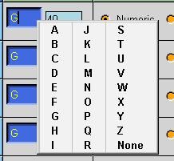

This dialog allows you to define the output characteristics of each of the words that your postprocessor will output. Note that this dialog will modify groups of words that use the same format. This dialog allows you modify the format. If you want to specify a different format one of the words, you must go to the word address section of N/C Data Definitions. The following fields are available:
Address
This field is the name of the word used by the system. This name
is the same name that you will find in the word address section of the
N/C Data Definitions section.
Leader/Code
This field will allow you to modify the leader for any word.
The leader is the character than precedes the numeric information.
For instance, if the word is X12.345, then the leader is X. You can
either type in a new leader or right click on the existing leader and choose
from the list.

Data Type
The data type can be either numeric or text. Usually all N/C
code is numeric. You will need to specify text when the code you
need cannot be formatted from a number directly into a word address and
a value like most N/C code. One example of this is if you need a
G84.1 for tapping and G81 (without a decimal) for drilling. In this
case you have to make the G_motion word a text and change all the G codes
to G81 instead of 81 and a leader of G. You can also go to the format
dialog in N/C Data Definitions to change only the G_motion word to text.
Plus (+)
This option will allow you to get a plus sign for all positive numbers.
If you set this option to no you will get an X1.0. If you set this
to yes, you will get an X+1.0. You will always get a minus sign for
all numeric data if the specified number is negative.
Lead Zero
The option will allow you to define whether you will output leading
zeroes with your N/C Code.
Integer
This option will control how many digits are output to the left of
the decimal point. You will get an error if your numeric data exceeds
the format you have specified.
Decimal (.)
This option will control whether or not the numeric data has a decimal
point. You will get an error if you suppress the decimal point and
do not output at least leading or trailing zeroes.
Fraction
This option determines how many digits will be output to right of the
decimal point.
Trail Zero
The option will allow you to define whether you will output trailing
zeroes with your N/C Code.
Post Builder will automatically output a zero format that is compatible with the options you have chosen. If you suppressed the decimal point, your format for outputting zero will be M0. If you are outputting the decimal point, your zero format will be X0.0. If you want to change how your postprocessor will output a value of zero for your coordinate data, see the zero option for formats in the N/C Data Definitions section.